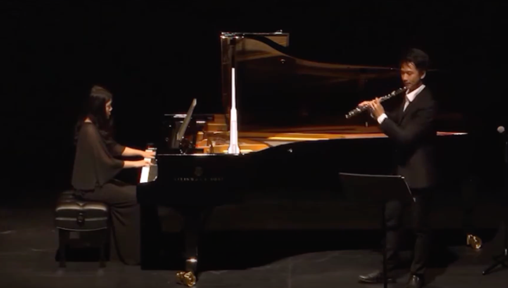
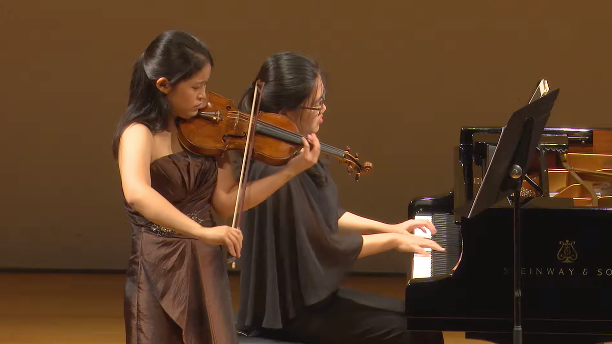
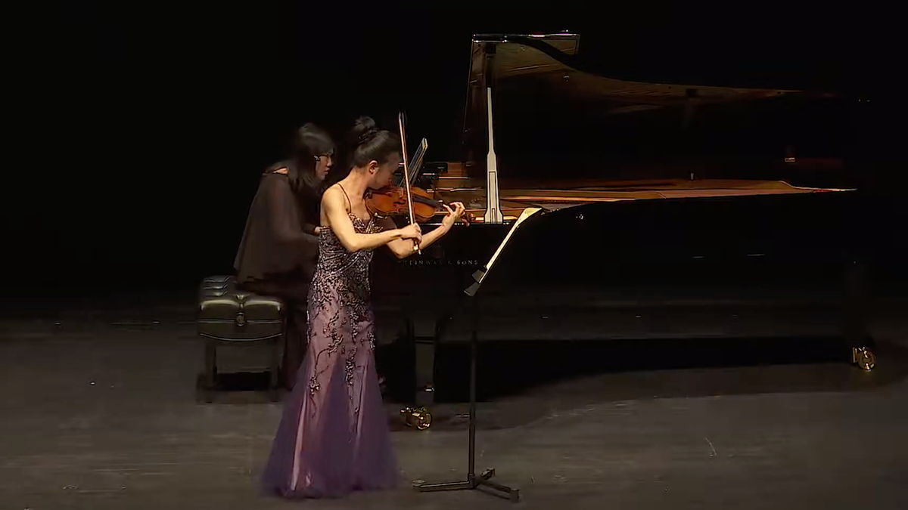
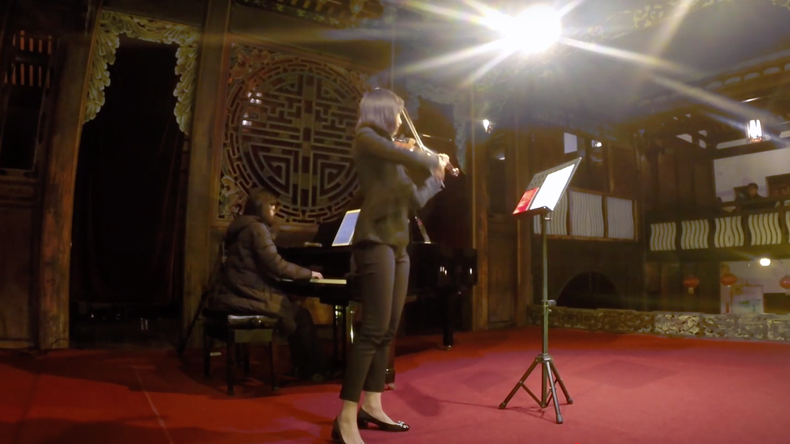

1-1 Home Violin | Viola | Piano Lesson for all ages & levels in
Mandarin | English in Hsinchu region
Teachers with more than 10 years of teaching experience. Customised
learning path for each individual student depending on their learning
style. Home tuition available.
Email us for enquiries
/ teacher info, stating your name and age.
Wedding / Social or Corporate Events / Birthday Celebration Live Music
Performances
Specialised in live performances for Weddings, Social Events,
Networking Night, Roadshow, Birthday Celebration. etc. Our musicians
have all at least 10 years of experience with their respective
instruments and have graduated from music conservatories. Available
for solo or accompaniment at weddings, anniversaries, birthdays, house
and corporate /private events, community grassroots events or hotel
lounges. Open to renumeration discussion. Able to bring own keyboard
synthesiser (to be plugged into your venue's sound system for
ballrooms) for venues without a piano.
Email us for info such
as event, venue, promo materials, live samples, complexity of
requirements and duration of play (inclusive of wait time if any) for
a friendly discussion and quotation.
professional piano accompanist / collaborative pianist / corporate
event
Experienced professional collaborative pianist / accompanist for hire
- exams / audition / performances. Fee depends on the repertoire and
student level and location. Past collaborators include winners from
Singapore International Violin Competition, Isaac Stern International
Violin Competition, International Jean Sibelius Violin Competition
(Helsinki, Finland), Queen Elisabeth Competition, and International
Violin Competition of Indianapolis.
Email us for info such
as repertoire requirements and location for a friendly discussion and
quotation.

Recital with Ting-Wei Chen, Solo Flutist of
Tonkünstler-Orchester. Lecturer of MDW Vienna
André Jolivet: Chant de Linos
Watch

Recital with Yu-Ting Chen, violinist of The Philadelphia
Orchestra, Senior 3rd Prize, Menuhin Competition
Richard Strauss: Sonata in E-flat major, Op. 18
Watch

Recital with Serena Huang, concert violinist
Ludwig van Beethoven: Violin Sonata in C minor, Op. 30, No. 2
Watch

Recital with Nancy Zhou, concert violinist
Teng Yu-Hsien: Bāng Chhun-hong
Watch
More about our Artistic Director
Taiwanese violist/violinist/pianist Tzu-Ching (Phyllis) Yen made her
concerto debut at the age of 9 in Kaohsiung City Cultural Centre in the
Yamaha Annual Celebration Concert as a pianist. Since then, she has
undergone serious conservatory-level training in music schools and has
been awarded several top prizes in National Music Competitions in
pre-college years both as pianist and violinist. She
obtained her master of performance
from the Institute of Music, National Chiao Tung University in Taiwan
as a recipient of the prestigious ZyXEL scholarship.
She actively appears onstage both as violist, pianist and violinist. In
2012, she gave the Taipei-premiere performance of Luciano Berio’s
Sequenza VIII for solo violin. She has also appeared as both soloist and
chamber musician in Asian Composers League Conference & Festival (2011),
Taipei International New Music Festival (2012, 2013), ChiaoTa Chamber
Ensemble (2012), Burapha Music and Performing Arts International
Festival (2013) in Thailand, and the Great Mountains Music Festival &
School (2013, 2014) in Korea, the
Kneisel Hall Chamber Music School & Festival (2015)
in the United States, and the Moritzburg Festival Orchestra (2016) in
Germany.
An active chamber musician, Ms Yen has collaborated with such musicians
as violist
Hsin-Yun Huang
(faculty, the Juillard School), violinist
Nancy Zhou,
Sirena Huang,
Richard Lin,
Yu-Ting Chen, and flutist
Ting-Wei Chen, just to name a few.
She has studied or participated in masterclasses with pianists Robert
Shannon, Michael Lewin, Ning An, Ju-Ying Song, Gloria Chien, Marian
Hahn, Jane Coop, and Wu Han, violinists Wayne Lin, Qian Zhou, Vesselin
Paraschkevov, Joseph Eui-Myung Kim, Jonathan Crow, Ik-Hwan Bae,
Krzysztof Wegrzyn, Ani Kavafian, Laurie Smukler, Kai Vogler, Valeriy
Sokolov, cellist David Finckel, Li-Wei Qin, Jan Vogler, Joel Krosnick,
along with violists Hsin-Yun Huang, Paul Neubauer, Katherine Murdock,
Doris Lederer, Maxim Rysanov, Paul Silverthorne and Hungwei Huang. In
2015, under the invitation of Ms
Laurie Smukler, she was invited to study viola performance
with full fellowship
in the Bard College Conservatory of Music, New York, which she
subsequently turned down.
Phyllis also composes and makes arrangements in her spare time. Her
orchestral arrangements have been performed by the Evergreen Symphony
Orchestra and National Taiwan Symphony Orchestra. She occasionally
acts as a score editor
for video games, such as the beloved “DEEMO -Reborn- OST”.
In addition to her musical achievements, Phyllis holds a bachelor degree
in Physics and a
master in Astronomy
from National Tsing Hua University. She
won the “Be An Integral Astronomer” competition
held by the European Space Agency, and obtained a
fellowship
to study in the Theory Group in the Mullard Space Science Laboratory,
University College London. Her scientific publications can be found in
several scientific journals.
Phyllis has freelanced with the
Metropolitan Festival Orchestra and the Malaysian Philharmonic
Orchestra.